142
1 caixa de leite condensado
1 colher (sopa) de margarina sem sal
4 colheres de sopa de chocolate em pó
Granulado à gosto
Em uma panela funda, acrescente o leite condensado, a margarina e o chocolate em pó.
Cozinhe em fogo médio e mexa até que o brigadeiro comece a desgrudar da panela.
Deixe esfriar e faça pequenas bolas com a mão, passando a massa no chocolate granulado.
30 porções.
Troque ideias com um colega e escrevam, qual será a proporção se Franciele preparar brigadeiros para 90 pessoas, considerando que cada uma comerá um brigadeiro.
Escrevam, no caderno, a quantidade de ingredientes necessários para fazer brigadeiros para 90 pessoas, considerando que cada uma comerá um brigadeiro.
Troque ideias com um colega e escrevam, qual é a proporção nessa situação.
Escrevam, em seus cadernos, a velocidade média que Juliana costuma viajar.
Troque ideias com um colega e escrevam, em seus cadernos, qual é a proporção nessa situação.
(FMABC SP) A descrição de administração de um antibiótico para um paciente é 60 mg/kg/dia. O médico prescreveu que sejam administrados 290 mg por três vezes ao dia. É correto concluir que o peso do paciente é igual a
15,6 kg
10,0 kg
11,8 kg
9,7 kg
14,5 kg
(UEMS) O ciclo lunar tem 28 dias. Os indígenas, ao utilizarem esse ciclo, determinavam o plantio e a colheita de suas lavouras.
28
56
365
730
1.568
(ENEM) Em uma corrida automobilística, os carros podem fazer paradas nos boxes para efetuar trocas de pneus. Nessas trocas, o trabalho é feito por um grupo de três pessoas em cada pneu. Considere que os grupos iniciam o trabalho no mesmo instante, trabalham a mesma velocidade e cada grupo trabalha em um único pneu. Com os quatro grupos completos, são necessários 4 segundos para que a troca seja efetuada. O tempo gasto por um grupo para trocar um pneu é inversamente proporcional ao número de pessoas trabalhando nele. Em uma dessas paradas, um dos trabalhadores passou mal, não pôde participar da troca e nem foi substituído, de forma que um dos quatro grupos de troca ficou reduzido.
6,0
5,7
5,0
4,5
4,4
Descubra quais são os gráficos que apresentam a relação entre duas grandezas diretamente proporcionais.
Interpretação de gráficos
De acordo com o gráfico, responda em seu caderno:
Qual país teve a maior quantidade de solicitações de reconhecimento da condição de refugiado?
Qual é a diferença entre o percentual de solicitações entre os dois países que tiveram mais registros?
Em sua opinião quais são os motivos para uma pessoa solicitar refúgio em outro país?
(Saresp) Para saber quais eram os tipos de revistas esportivas mais lidas, foi feita uma pesquisa em um determinado bairro.
(ENEM) Uma enquete, realizada em março de 2010, perguntava aos internautas se eles acreditavam que as atividades humanas provocam o aquecimento global. Eram três as alternativas possíveis e 279 internautas responderam à enquete, como mostra o gráfico.
Menos de 23.
Mais de 23 e menos de 25.
Mais de 50 e menos de 75.
Mais de 100 e menos de 190.
Mais de 200.
O envelhecimento da população compõe o fenômeno da transição demográfica, caracterizado pelo declínio das taxas de mortalidade e de fecundidade. Isso modifica a forma da pirâmide populacional: a base fica estreita e o topo aumenta. A seguir, temos uma pirâmide etária das regiões desenvolvidas.
Observando as idades da população nos anos de 2012 e 2019, qual faixa etária tem mais mulheres em cada ano?
Observando as idades da população nos dois anos, qual faixa etária tem menos mulheres em cada ano?
O que podemos dizer a respeito da longevidade da população, ao compararmos os dois anos?
(Saresp) Foi perguntado a um total de 100 pessoas em uma cidade se frequentavam cinema e se frequentavam teatro. A tabela abaixo resume o resultado desta pesquisa.
frequentam teatro e não frequentam cinema.
frequentam cinema e não frequentam teatro.
frequentam cinema e teatro.
não frequentam nem cinema nem teatro.
Simplifique as seguintes frações algébricas:
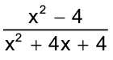
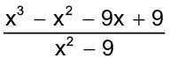
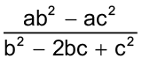
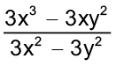
Na fração algébrica 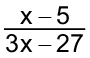, o valor de x tem de ser diferente de:
5
-3
9
-5
(PUC-MG) O valor da fração 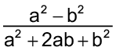, quando a = 51 e
b = 49, é:0,02
0,2
2
20
A expressão 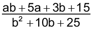 equivale a:
a - 5
a + 3
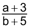
b + 5
(Saresp) Simplificando-se a expressão 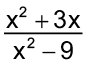, em que x ≠ ±3, obtém-se:
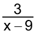
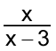
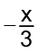
(Saresp) A sentença algébrica d = 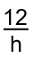relaciona o número d, de dias, e o número h, de horas trabalhadas por um sapateiro, por dia, para fazer certa quantidade de sandálias. Supõe-se que o trabalhador produza a mesma quantidade de sandálias por hora trabalhada. Qual das tabelas abaixo expressa, de forma correta, a sentença algébrica?
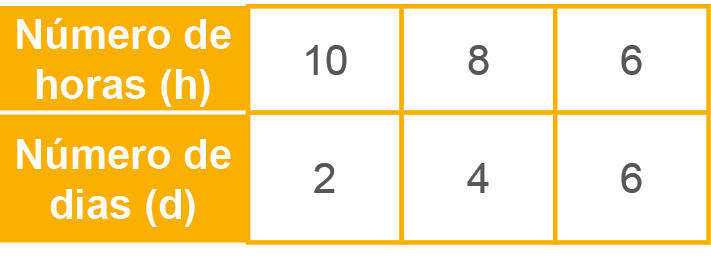
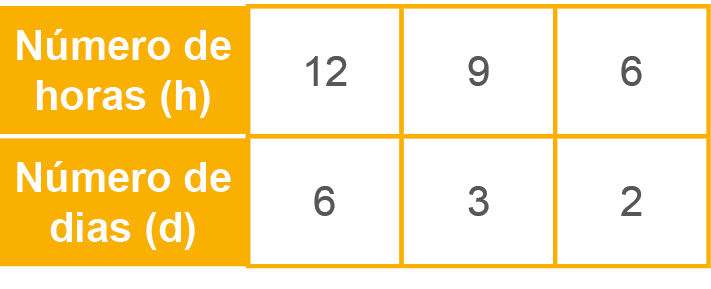
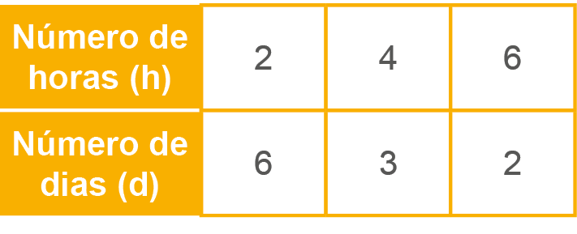
A solução da equação 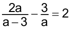, com a ≠ 3 e a ≠ 0, é:
3
-3
0
2
A expressão algébrica 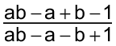 equivale a:
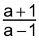
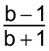
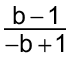
-1
Na fração algébrica 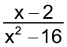, a variável x tem de ser diferente de:
2
2 e 4
-2 e - 4
- 4 e 4
A equação equivalente a 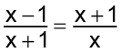 é:
3x = -1
-3x = -1
3x = -2
-3x = -2
O resultado de 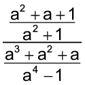 é:
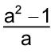
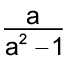
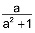
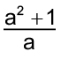
CAPÍTULO 4 - Proporcionalidade
Aprendemos nos anos anteriores que existem grandezas diretamente proporcionais, o que são grandezas inversamente proporcionais e situações de não proporcionalidade. Vimos também que podemos utilizar tabelas e a regra de três para auxiliar na resolução de problemas envolvendo essas grandezas.
A partir desses conhecimentos, observe as seguintes situações:
Situação 1
Franciele quer fazer alguns brigadeiros para a sua festa e encontrou na internet a seguinte receita:
Ingredientes
Modo de preparo
Rendimento
Nesta situação, quando aumentamos a quantidade de porções a serem feitas, aumentamos a quantidade de ingredientes proporcionalmente.
143
Situação 2
Juliana vai viajar para a casa de sua avó e ela normalmente demora 2 horas para realizar este percurso. Já o pai de Juliana, faz o mesmo percurso a uma velocidade média de 60 km/h e leva aproximadamente 3 horas.
Sabemos que essas grandezas se relacionam de maneira inversamente proporcionais, pois à medida que a velocidade aumenta, o tempo diminui.
Situação 3
Em um jogo de basquete, Marcos fez 16 cestas e Lucas fez 12. No outro jogo, Marcos fez 5 cestas e Lucas fez 10.
Como não é possível saber quantas cestas serão feitas a cada jogo, dizemos que esse caso não é diretamente e nem inversamente proporcional.
144
Representação gráfica
Vamos retomar a situação 1, em que se precisava de 4 colheres de sopa de chocolate em pó para preparar uma receita de brigadeiro.
Agora, observe o quadro abaixo com a quantidade de colheres de chocolate que se precisa para cada receita.
|
Quantidade de receitas |
Quantidade de colheres de chocolate |
|
1 |
4 |
|
2 |
8 |
|
3 |
12 |
Podemos representar a quantidade de colheres de chocolate necessária no plano cartesiano, onde o eixo x é a quantidade de receitas e, o eixo y é a quantidade de colheres de chocolate em pó.
Observe que os pontos obtidos pertencem a uma mesma reta que passa pela origem (0,0) e podemos representar a situação pela equação: 4x = y.
145
Vamos retomar a situação 2, quanto maior a velocidade, menor será o tempo de viagem.
|
Velocidade em km/h |
Tempo em horas |
|
90 |
2 |
|
60 |
3 |
|
45 |
4 |
|
36 |
5 |
|
30 |
6 |
Podemos representar a situação no plano cartesiano, onde o eixo x indica o tempo em horas e, o eixo y é a velocidade em km/h.
Observe que, os pontos obtidos não pertencem a uma mesma reta.
Acervo da Editora
Rodovia Carvalho Pinto. Taubaté, SP, 2017.
Alunos jogando basquete. Juiz de Fora, MG, 2018.
D.Bertolli/Flickr
Alice Coelho/UFJF
12
11
10
9
8
7
6
5
4
3
2
1
0
y
1
A
2
B
3
f
C
4
5
6
7
8
x
- 10
120
110
100
90
80
70
60
50
40
30
20
10
0
y
10
20
30
40
50
60
x
146
Encontre soluções
Considerando que o ano tenha exatamente 365 dias, uma pessoa que hoje esteja completando 56 anos presenciou quantos ciclos lunares completos?
Nessa parada específica, com um dos grupos reduzido, qual foi o tempo gasto, em segundos, para trocar os quatro pneus?
- 2
- 1,5
- 1
- 0,5
3
2
1
0
- 1
- 2
- 3
y
0,5
1
1,5
2
2,5
3
x
147
Probabilidade e estatística
Brasil registra mais de 700 mil migrantes entre 2010 e 2018
Para a secretária Nacional de Justiça, Maria Hilda Marsiaj, a presença de imigrantes, solicitantes de refúgio e refugiados no Brasil traz desafios não somente para os formuladores e gestores das políticas públicas migratórias, mas também aos diversos atores da sociedade civil que cumprem papel histórico na acolhida de imigrantes e refugiados. “O conhecimento rigoroso da imigração, a partir de relatórios como hoje lançado, é ferramenta imprescindível para a formulação de políticas públicas e para a tomada de decisões de ações específicas que permitam a inserção e contribuição dos migrantes para o desenvolvimento do país”. Ela ressaltou, ainda, que o monitoramento estatístico, amparado para análise sociodemográfica e socioeconômica é tarefa do Estado e recomendação da comunidade internacional. [...]
O relatório revela que de 2010 a 2018 foram registrados no Brasil 774,2 mil imigrantes, considerando todos os amparos legais. Desse total, destacam-se 395,1 imigrantes de longo termo (cujo tempo de residência é superior a um ano), composto principalmente por pessoas oriundas do hemisfério sul. Ao longo da série, os haitianos figuram como a principal nacionalidade registrada no Brasil e no mercado de trabalho brasileiro. Os nacionais da Venezuela, fluxo migratório que teve crescimento exponencial a partir de 2016, obtiveram o primeiro lugar em número de registros no país em 2018. Outras nacionalidades do hemisfério sul também tiveram destaque ao longo da série: bolivianos, colombianos, argentinos, chineses e peruanos, entre outras.
Fonte: UFJF. Disponível em: https://cutt.ly/wJLLBmn. Acesso em: 19 abr. 2022.
148
Observe o gráfico a seguir. Inicia-se a análise a partir dos dados da Polícia Federal sobre solicitantes de reconhecimento da condição de refugiado para o ano de 2020.
- 4
- 3
- 2
- 1
4
3
2
1
0
- 1
- 2
- 3
- 4
y
1
2
3
4
x
- 4
- 3
- 2
- 1
4
3
2
1
0
- 1
- 2
- 3
- 4
y
1
2
3
4
x
- 1
16
12
9
4
1
0
y
1
2
3
4
x
Tabela: Tipo de revista mais lido
![Tabela com cinco linhas e duas colunas. Linha 1: Frequência percentual; Tipo de revista. Linha 2: 40; semanal. Linha 3: 30; mensal. Linha 4: 15; bimestral. Linha 5: 15; trimestral. Nos quatro gráficos de barras verticais da atividade, em comum eles têm na horizontal o tipo de revista. Na vertical estão identificados de zero a 50 a frequência percentual. Gráfico a: Semanal com 40%; Mensal com 30%; Bimestral com 15%; Trimestral com 15%. Gráfico b: Semanal com 30%; Mensal com 40%; Bimestral com 15%; Trimestral com 15%. Gráfico c: Semanal com 40%; Mensal com 15%; Bimestral com 30%; Trimestral com 15%. Gráfico d: Semanal com 15%; Mensal com 15%; Bimestral com 30%; Trimestral com 40%.](../../resources/images/8ANO_U6_image/M8A_6.png)
149
Qual o gráfico que representa os dados acima apresentados?
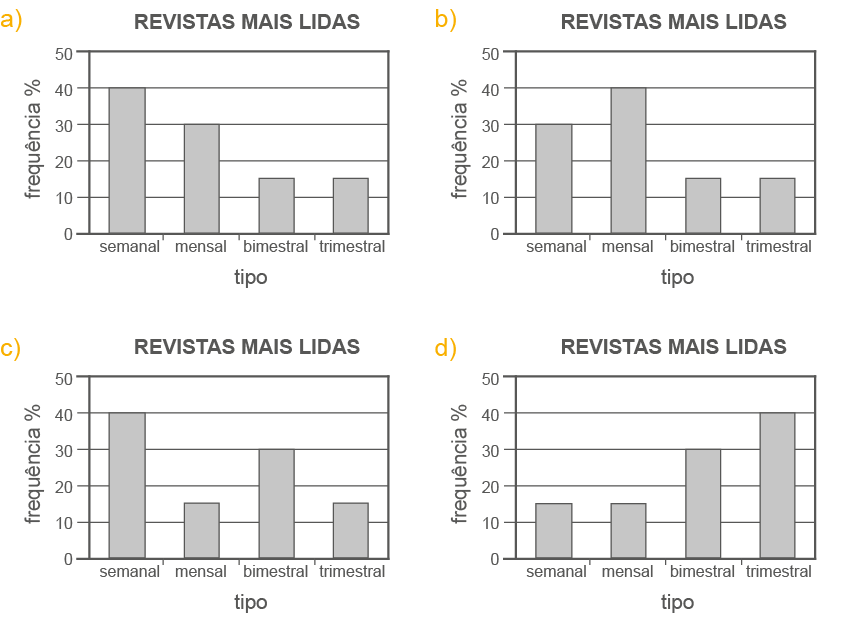
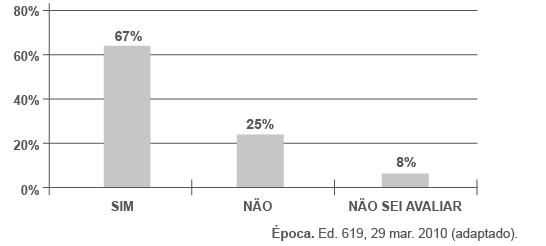
Analisando os dados do gráfico, quantos internautas responderam “NÃO” à enquete?
150
Na pirâmide etária é possível comparar a quantidade de homens e mulheres, por idade, no ano de 2012 e de 2019.
151
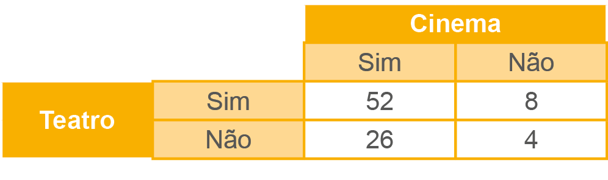
Se os dados dessa pesquisa forem transportados para o gráfico abaixo, a coluna pintada de laranja representa o número de pessoas que:
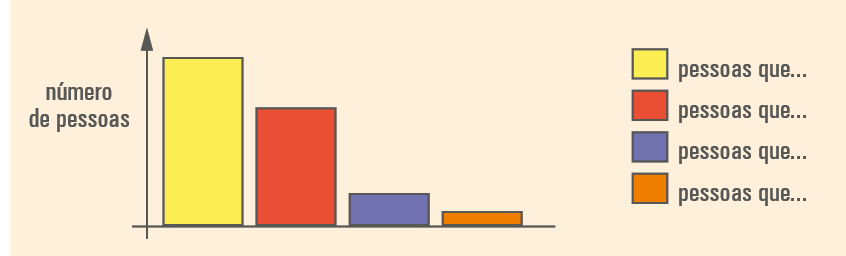
Fonte: Elaborado pelo OBMigra, a partir dos dados da Polícia Federal, Solicitações de reconhecimento da condição de refugiado - Brasil, 2020. Disponível em: https://cutt.ly/QKHg7Bq. Acesso em: 27 jun. 2022. (Adaptado).
![Gráfico de barras horizontais, intitulado: População residente, segundo o sexo e os grupos de idade (%). As barras representam a quantidade de homens e mulheres, por idade. No ano de 2012 as barras são apresentadas em verde claro e no ano de 2019 as barras são apresentadas em verde escuro. O gráfico está dividido ao meio, o lado esquerdo representa os homens e o lado direito representa as mulheres. Eixo horizontal, referente a quantidade de homens e mulheres, apresentadas em escala de 2,0, com início no 0, a partir do centro, e término em 4,0. Essa escala é apresentada dos dois lados, esquerdo e direito. Eixo vertical, referente a idade, apresentadas em escala de 5 anos, com início de 0 à 4 anos, a partir da base, e término em 80 anos ou mais.
Dados do gráfico:
- 0 a 4 anos. 2012: homens ≅ 3,50, mulheres ≅ 3,20; 2019: homens ≅ 3,20, mulheres ≅ 3,00.
- 5 a 9 anos. 2012: homens ≅ 3,70, mulheres ≅ 3,50; 2019: homens ≅ 3,30, mulheres ≅ 3,20.
- 10 a 14 anos. 2012: homens ≅ 4,30, mulheres ≅ 4,10; 2019: homens ≅ 3,50, mulheres ≅ 3,30.
- 15 a 19 anos. 2012: homens ≅ 4,40, mulheres ≅ 4,20; 2019: homens ≅ 3,80, mulheres ≅ 3,60.
- 20 a 24 anos. 2012: homens ≅ 4,00, mulheres ≅ 3,90; 2019: homens ≅ 3,70, mulheres ≅ 3,70.
- 25 a 29 anos. 2012: homens ≅ 3,90, mulheres ≅ 4,10; 2019: homens ≅ 3,50, mulheres ≅ 3,70.
- 30 a 34 anos. 2012: homens ≅ 3,80, mulheres ≅ 4,20; 2019: homens ≅ 3,70, mulheres ≅ 3,90.
- 35 a 39 anos. 2012: homens ≅ 3,50, mulheres ≅ 3,70; 2019: homens ≅ 3,80, mulheres ≅ 4,10.
- 40 a 44 anos. 2012: homens ≅ 3,20, mulheres ≅ 3,50; 2019: homens ≅ 3,50, mulheres ≅ 3,70.
- 45 a 49 anos. 2012: homens ≅ 2,90, mulheres ≅ 3,40; 2019: homens ≅ 3,30, mulheres ≅ 3,90.
- 50 a 54 anos. 2012: homens ≅ 2,70, mulheres ≅ 3,00; 2019: homens ≅ 3,90, mulheres ≅ 3,40.
- 55 a 59 anos. 2012: homens ≅ 2,30, mulheres ≅ 2,60; 2019: homens ≅ 2,80, mulheres ≅ 3,00.
- 60 a 64 anos. 2012: homens ≅ 1,80, mulheres ≅ 2,10; 2019: homens ≅ 2,20, mulheres ≅ 2,70.
- 65 a 69 anos. 2012: homens ≅ 1,40, mulheres ≅ 1,70; 2019: homens ≅ 1,70, mulheres ≅ 2,10.
- 70 a 74 anos. 2012: homens ≅ 1,00, mulheres ≅ 1,20; 2019: homens ≅ 1,20, mulheres ≅ 1,50.
- 75 a 79 anos. 2012: homens ≅ 0,70, mulheres ≅ 0,90; 2019: homens ≅ 0,80, mulheres ≅ 1,00
- 80 anos ou mais. 2012: homens ≅ 0,80, mulheres ≅ 1,00; 2019: homens ≅ 0,90, mulheres ≅ 1,30.](../../resources/images/8ANO_U6_image/M8A_8_ano_mat_P_146_infogr_fico_pnad.png)
Fonte: © IBGE. Pesquisa Nacional por Amostra de Domicílios, 2012/2019. Disponível em: https://educa.ibge.gov.br/images/educa/jovens/populacao/jovens_populacao_4_piramide_etaria_2barras.png. Acesso em: 19 abr. 2022.
© IBGE
relembrE
152
153
Por volta de 450 d.C. até perto do fim do século XV, a Índia outra vez se viu às voltas com numerosas invasões estrangeiras. Primeiro vieram os hunos, depois, no século VIII, os árabes e, no século XI, os persas. Durante este período despontaram vários matemáticos hindus eminentes. [...]
Pode-se apreciar a natureza de muitos problemas de aritmética hindus pelos que se seguem adaptados por Mahavira (c. 850). [...]
EVES, Howard. Introdução à história da Matemática. Tradução de Hygino H. Domingues. 2 ed. Campinas: Editora da Unicamp, 1997. p. 250 e 271.
Agora, com um colega, tente resolver um dos problemas de aritmética hindu.
De um monte de mangas, o rei pega ; a rainha, do restante; os três príncipes mais velhos, 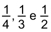 dos restos sucessivos; e o mais jovem de todos, as 3 mangas restantes. Ó, você que é perito em problemas variados sobre frações, diga qual é o número de mangas do monte.
12. Por volta de 450 d.C. até perto do fim do século XV, a Índia outra vez se viu às voltas com numerosas invasões estrangeiras. Primeiro vieram os hunos, depois, no século VIII, os árabes e, no século XI, os persas. Durante este período despontaram vários matemáticos hindus eminentes. [...]
Pode-se apreciar a natureza de muitos problemas de aritmética hindus pelos que se seguem adaptados por Mahavira (c. 850). [...]
EVES, Howard. Introdução à história da Matemática. Tradução de Hygino H. Domingues. 2 ed. Campinas: Editora da Unicamp, 1997. p. 250 e 271.